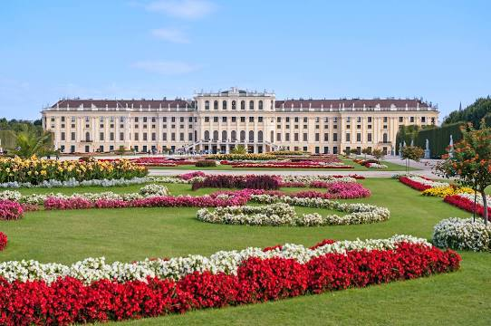

Vienna

Vienna is the capital city of Austria.
The English name Vienna is borrowed from the homonymous Italian name.
Vienna is composed of 23 districts (Bezirke). Administrative district offices in Vienna (called Magistratische Bezirksämter) serve functions similar to those in the other Austrian states (called Bezirkshauptmannschaften), the officers being subject to the mayor of Vienna; with the notable exception of the police, which is under federal supervision.